Informações sobre
Estado do Piauí
O Piauí é um estado em que o interior é mais desenvolvido que o litoral. Sua capital, Teresina, é a única do Nordeste que não está às margens do Oceano Atlântico. Seu litoral é pequeno. São 66 Km de praias de águas mornas e coqueirais.
O rio Parnaíba, que durante quase todo o seu curso separa o Piauí do Maranhão, deságua no Oceano formando o magnífico Delta do Parnaíba, com cerca de 80 ilhas que se espalham pelos canais.
O Estado ocupa uma área heterogênea, apresentando características de cerrado, da Amazônia e do Nordeste semiárido. Seu solo é muito antigo, rico em achados pré-históricos e inscrições rupestres.
Nesta sessão você poderá encontrar informações sobre:
Informações da Cidade de TeresinaDelta do Parnaíba - Parnaíba - PI
Parque Nacional de Sete Cidades - Piracuruca - PI
Parque Nacional da Serra da Capivara - São Raimundo Nonato - PI
Teresina - PI
Teresina tem várias praias de água doce às margens do Rio Parnaíba.
Ela possui diversos atrativos naturais e culturais que merecem ser vistos.
Palácio de Karnak
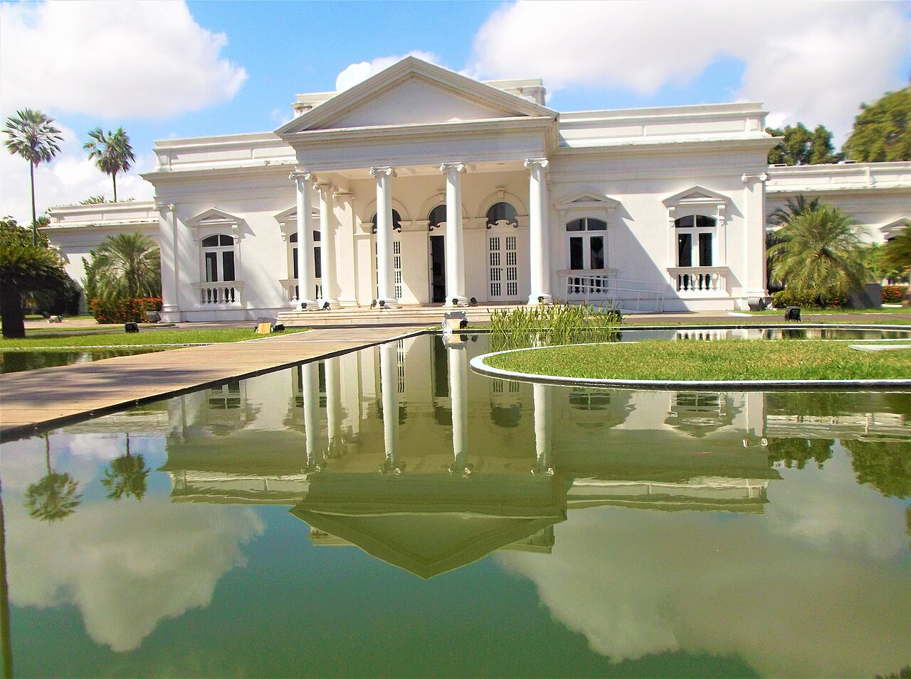
Rio Parnaíba
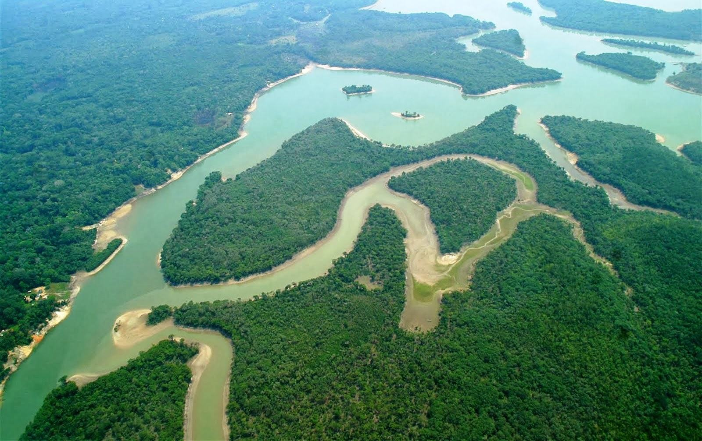
Catedral de N. S. do Amparo
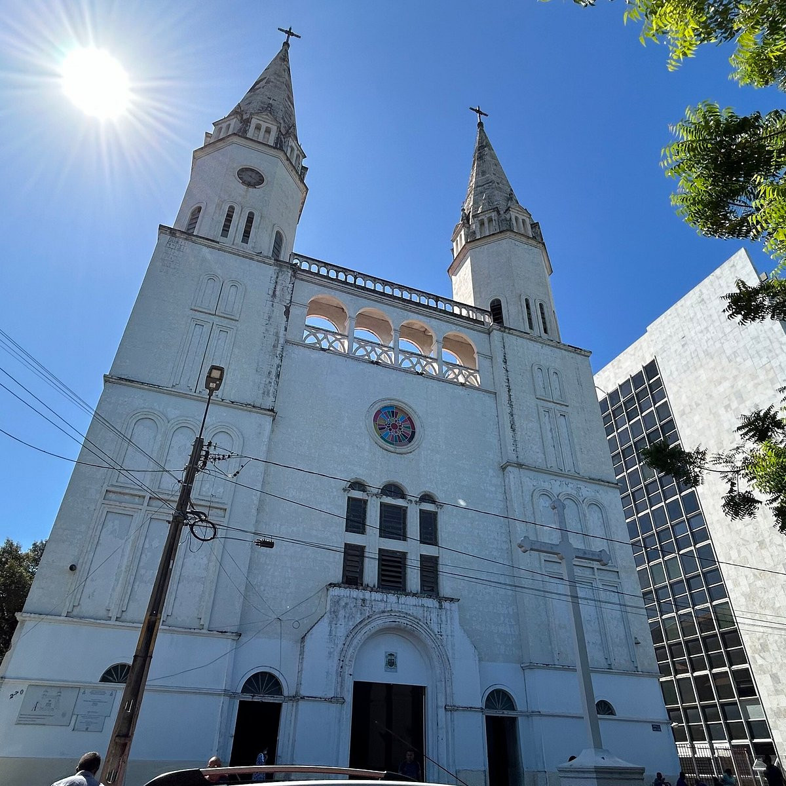
Delta do Parnaíba
Nos seus 2.700 Km², o Delta do Parnaíba exibe por todos os lados um inacreditável cenário de ilhas, ilhotas, manguezais e dunas a perder de vista, rodeado por muita água doce que, antes de desaguar no mar, serpenteia por toda a região desde a Chapada das Mangabeiras.
Em Parnaíba, uma das mais antigas cidades do Estado, a 330 Km de Teresina, vale a pena visitar o Porto das Barcas, o primeiro núcleo formado da região. Foi em torno desse porto que a cidade nasceu, no final do século 17, impulsionada pelo comércio das charqueadas.
No município vizinho de Luís Correia, são as praias de Atalaia e Coqueiro o centro de agitação, com suas dezenas de barracas de caranguejos, siris, lulas e peixes. A Lagoa do Portinho, rodeada por imensas dunas e manguezais, é outro local imperdível do roteiro turístico do litoral piauiense.
Delta do Parnaíba: o terceiro maior delta do planeta
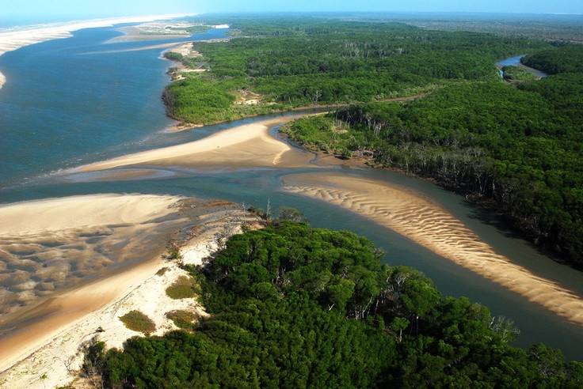
Ilha do Caju
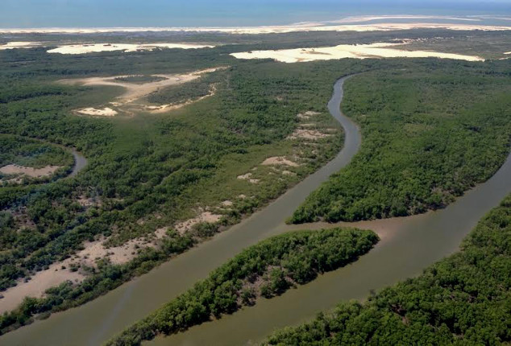
Porto das Barcas
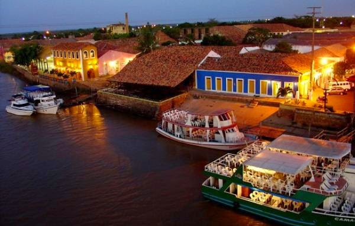
Lagoa do Portinho
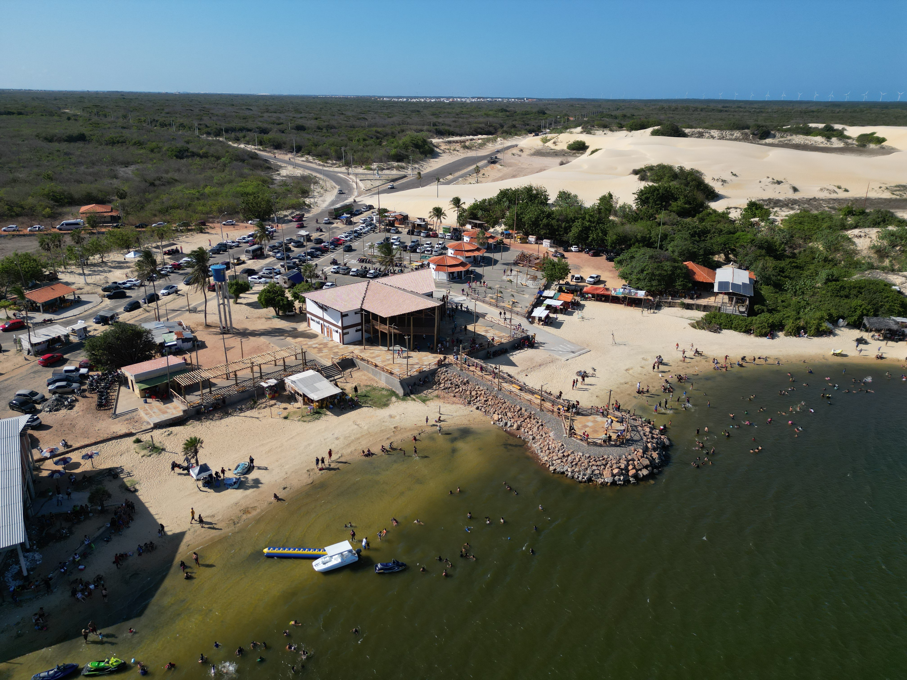
Sete Cidades
O Parque Nacional de Sete Cidades está localizado a 202 Km de Teresina. Sua área com 6.300 hectares possui formações rochosas que parecem, realmente, sete cidades, com ruas, praças e monumentos.
O Mapa do Brasil com rotação de 90 graus à esquerda
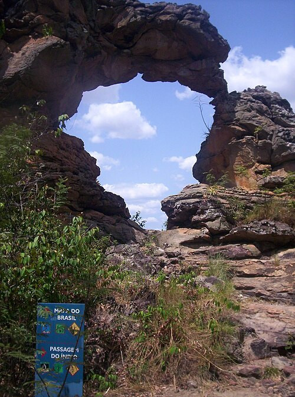
Salto do Batismo

Formações Rochosas
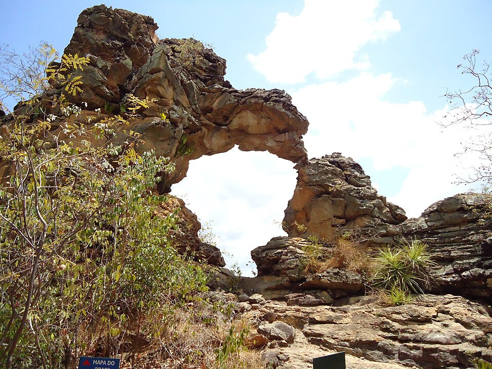
Parque Nacional da Serra da Capivara
A 650 Km ao sul de Teresina, pesquisadores identificaram grande concentração de sítios pré-históricos, alguns possivelmente datados de 40 mil anos.
O Parque Nacional da Serra da Capivara é o único Parque Nacional com ecossistema típico de caatinga.
O parque foi tombado pela UNESCO como Patrimônio Histórico da Humanidade, pois inscrições rupestres, fósseis e utensílios pré-históricos fazem do local um dos mais importantes achados arqueológicos da atualidade.
Inscrições Rupestres
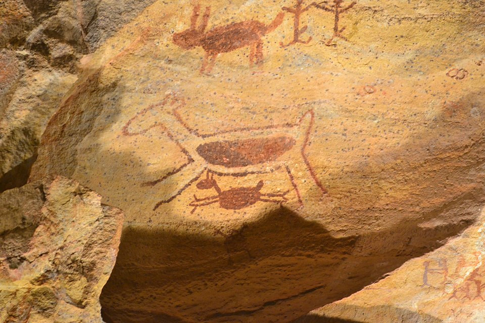
Serra da Capivara
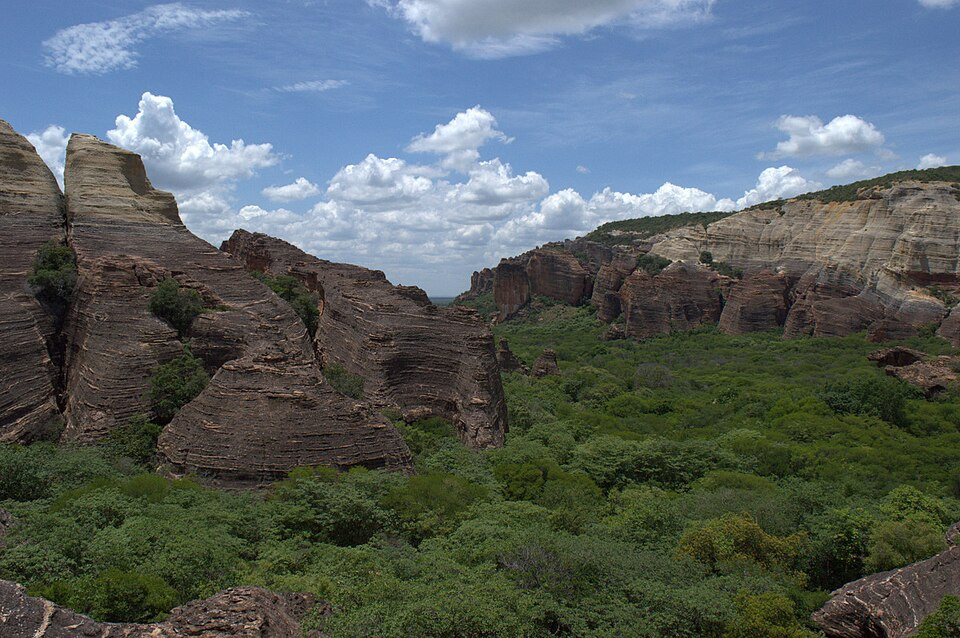
Fontes de Referência
Revista 0Km. Delta do Parnaíba - O Paraíso das Águas.
Críticas e Sugestões: Seu e-mail